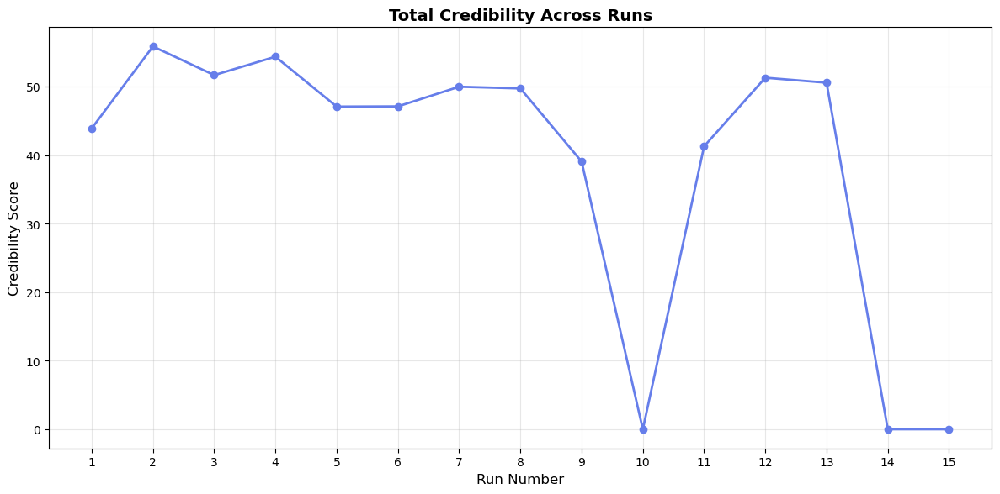
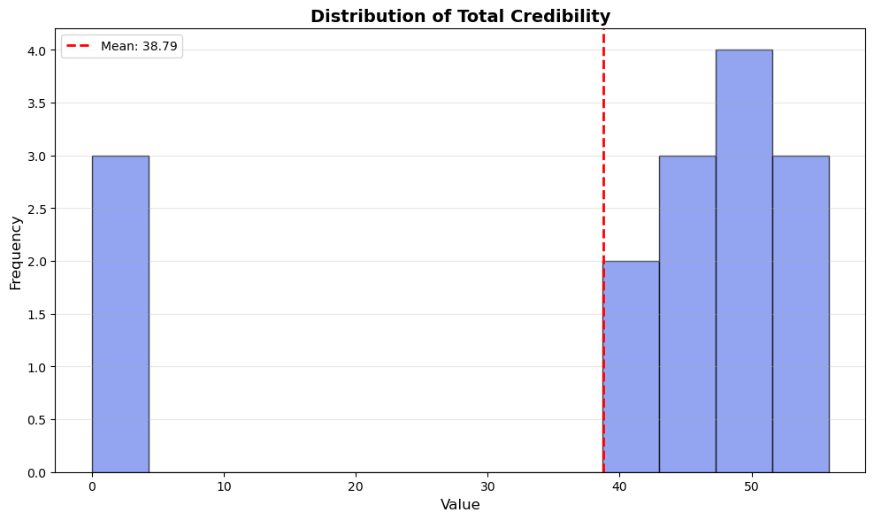
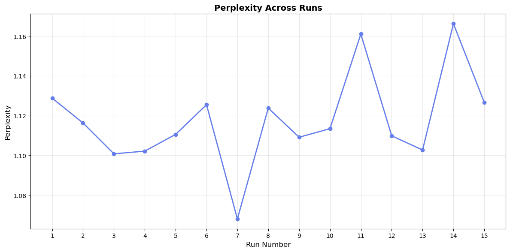
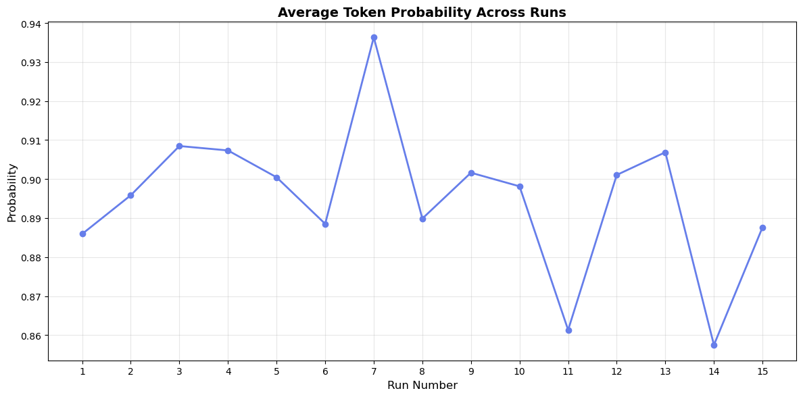

📈 Trends Over Runs
Credibility Score Progression
Credibility Distribution
Perplexity
Token Probability
Semantic Quality Score

Cyclomatic Complexity

Model: x-ai/grok-4-fast
Total Runs: 15
Generated: 2025-10-13 12:52:47
| Category | Run | Credibility | Perplexity | Quality Score | Functions | Syntax Valid | Executed |
|---|---|---|---|---|---|---|---|
| BEST | Run 2 | 55.85 | 1.12 | 93.5 | 106 | ✓ | ✗ |
| WORST | Run 10 | 0.00 | 1.11 | 48.5 | 0 | ✗ | ✗ |
The following runs have credibility scores more than 1.5 standard deviations from the mean:
Syntax Validity: 12/15 runs (80.0%)
Execution Success: 0/15 runs (0.0%)
| Run | Timestamp | Credibility | Perplexity | Quality | Functions | Classes | Lines | Complexity | Syntax | Executed |
|---|---|---|---|---|---|---|---|---|---|---|
| 1 | 2025-10-12 20:33:57 | 43.9 | 1.13 | 76.0 | 56 | 7 | 692 | 2.2 | ✓ | ✗ |
| 2 | 2025-10-12 20:37:50 | 55.9 | 1.12 | 93.5 | 106 | 3 | 779 | 1.7 | ✓ | ✗ |
| 3 | 2025-10-12 20:39:56 | 51.7 | 1.10 | 88.0 | 81 | 1 | 861 | 2.1 | ✓ | ✗ |
| 4 | 2025-10-12 20:42:49 | 54.4 | 1.10 | 92.5 | 97 | 1 | 736 | 1.5 | ✓ | ✗ |
| 5 | 2025-10-12 20:45:22 | 47.1 | 1.11 | 82.0 | 50 | 8 | 807 | 2.7 | ✓ | ✗ |
| 6 | 2025-10-12 20:47:21 | 47.1 | 1.13 | 81.5 | 71 | 9 | 803 | 2.5 | ✓ | ✗ |
| 7 | 2025-10-12 20:49:30 | 50.0 | 1.07 | 86.0 | 98 | 4 | 772 | 1.6 | ✓ | ✗ |
| 8 | 2025-10-12 20:51:01 | 49.7 | 1.12 | 86.5 | 48 | 12 | 830 | 2.5 | ✓ | ✗ |
| 9 | 2025-10-12 21:03:52 | 39.1 | 1.11 | 71.0 | 94 | 3 | 778 | 1.8 | ✓ | ✗ |
| 10 | 2025-10-12 21:06:37 | 0.0 | 1.11 | 48.5 | 0 | 0 | 798 | 0.0 | ✗ | ✗ |
| 11 | 2025-10-12 21:16:08 | 41.3 | 1.16 | 74.0 | 61 | 11 | 779 | 2.4 | ✓ | ✗ |
| 12 | 2025-10-12 21:27:45 | 51.3 | 1.11 | 88.0 | 97 | 4 | 688 | 1.7 | ✓ | ✗ |
| 13 | 2025-10-12 21:29:56 | 50.6 | 1.10 | 85.5 | 95 | 6 | 818 | 1.6 | ✓ | ✗ |
| 14 | 2025-10-12 21:33:01 | 0.0 | 1.17 | 48.5 | 0 | 0 | 401 | 0.0 | ✗ | ✗ |
| 15 | 2025-10-12 21:35:20 | 0.0 | 1.13 | 48.5 | 0 | 0 | 647 | 0.0 | ✗ | ✗ |
Generated by Model Comparison Tool